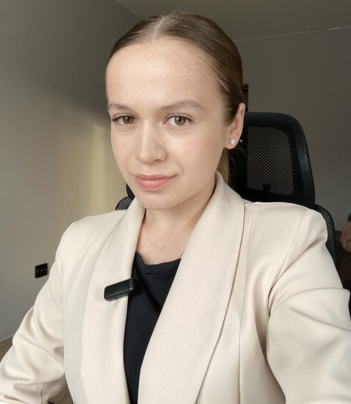

O mnie
Iryna Voloshko.
Iryna Voloshko.
Polska matematyka
- 01Szkoła i studia: E8, matura i sesja
- 02Uczę po polsku, rozumiem też po ukraińsku
- 03Od 5 lat pracuję według polskiego programu

💻 Lekcje online · 55 min🎓 E8 · matura · studia5 latz polskim programem
E8 · Maturai sesja na studiach
2 dyplomyw tym magister matematyki
600+zadań na stronie
Jak pracujemy
01
Diagnoza
Na początku sprawdzam, co już umiesz i gdzie są luki.
02
Plan pracy
Układam plan pod Twój cel: egzamin ósmoklasisty, maturę albo sesję.
03
Postęp co miesiąc
Wyniki widać w Twoim gabinecie ucznia: tematy, arkusze, porównanie miesięcy.
Wykształcenie
Magister
Wołyński Uniwersytet Narodowy im. Łesi UkrainkiEdukacja średnia: matematyka
Licencjat
Drohobycki Państwowy Uniwersytet PedagogicznyEdukacja wczesnoszkolna i informatyka
Wyniki uczniów
Częste pytania
Zajęcia są online?
Tak, wszystkie zajęcia odbywają się online.
Ile trwa jedna lekcja?
55 minut.
Jak zapłacić?
Online przez WayForPay, kartą lub Apple / Google Pay.
Od czego zacząć?
Od diagnozy: napisz do mnie na Telegramie, a po diagnozie dostaniesz plan pracy.